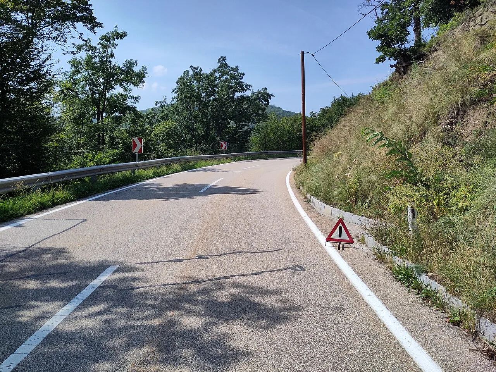
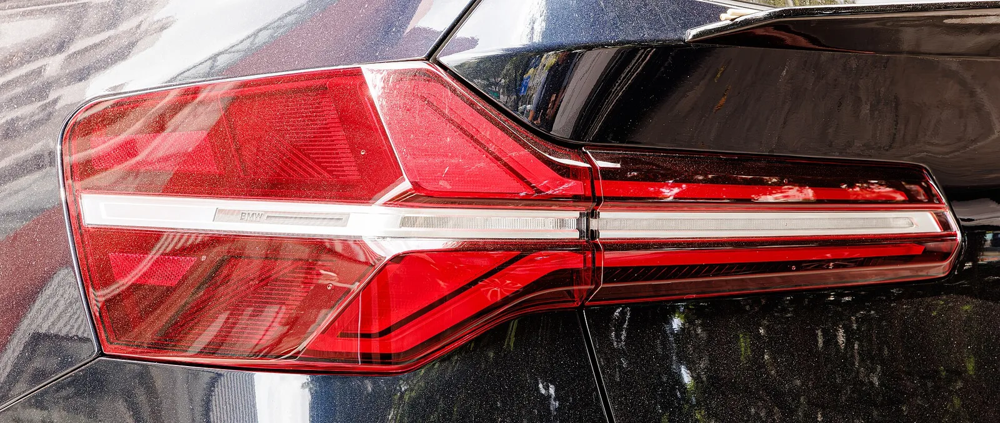

▲ 신형 BMW X3. 미국에서 13대가 조향 결함으로 리콜된다 ⓒ Wikimedia Commons
리콜 규모는 13대입니다. 오타가 아닙니다.
BMW가 미국에서 X3 13대를 리콜합니다. 그리고 그중 실제 수리가 필요한 차는 5%로 추정됩니다. 13대의 5%면 한 대도 안 됩니다.
그럼에도 리콜을 낸 이유는 결함의 성격에 있습니다.
1. 스티어링 스핀들이란
운전대와 바퀴 사이에는 여러 부품이 있습니다.
| 순서 | 부품 | 역할 |
|---|---|---|
| 1 | 스티어링 휠 | 운전자가 잡는 부분 |
| 2 | 스티어링 칼럼 | 휠의 회전을 아래로 전달 |
| 3 | 스티어링 스핀들 | 칼럼과 랙을 잇는 축 — 양끝에 관절이 있다 |
| 4 | 스티어링 랙 | 회전을 좌우 직선 운동으로 변환 |
| 5 | 타이로드 → 바퀴 | 실제 조향 |
스핀들은 칼럼과 랙을 잇는 중간 축입니다. 운전석에서 내려온 회전을 차체 아래의 랙까지 꺾어서 전달해야 하므로, 양끝에 관절(조인트)이 달려 있습니다.
이번 문제는 이 스핀들이 칼럼에 제대로 체결되지 않았을 가능성입니다. 조립 공정에서의 체결 불량입니다.
2. 완전히 풀리면 어떻게 되나
BMW의 설명은 간명합니다. 스핀들이 완전히 풀리면 "운전대가 바퀴와 무관하게 돌아갈 수 있다"는 것입니다.
이것이 조향 결함이 다른 결함과 다른 이유입니다. 브레이크 결함은 제동거리가 늘어나고, 엔진 결함은 출력이 떨어집니다. 운전자가 상황을 인지하고 대응할 여지가 조금이라도 있습니다.
조향이 끊기면 대응 자체가 불가능합니다. 핸들을 돌려도 차가 반응하지 않는 상황에서 운전자가 할 수 있는 일은 제한적입니다. 그래서 대수가 13대여도 리콜 대상이 됩니다.
| 결함 | 증상 | 대응 여지 |
|---|---|---|
| 제동력 저하 | 제동거리 증가 | 있음 — 감속·정차 가능 |
| 출력 상실 | 가속 불가 | 있음 — 갓길 정차 |
| 조향 상실 | 핸들이 헛돈다 | 거의 없음 |
3. 어떻게 발견됐나
2026년 7월, 한 고객이 신고했습니다. 운전대가 "큰 힘을 들이지 않고도 돌아간다"는 내용이었습니다.
이 표현이 결함의 초기 증상입니다. 스핀들 체결이 헐거워지기 시작하면, 완전히 풀리기 전에 조향 반응이 무뎌지거나 유격이 생깁니다. 핸들을 조금 돌렸는데 바퀴가 곧바로 따라오지 않는 느낌입니다.
BMW는 이 신고 하나에서 출발해 생산 이력을 추적했고, 같은 조건에서 조립됐을 가능성이 있는 13대를 특정했습니다. 2023년 8월부터 2026년 2월 사이 생산분입니다.
▲ 대상은 2023년 8월~2026년 2월 생산된 X3 중 13대다
4. 조치와 일정
| 1단계 | 스티어링 칼럼과 스핀들 점검 |
|---|---|
| 2단계 | 필요 시 스핀들·체결 부품 교체 |
| 3단계 | 상태에 따라 스티어링 칼럼까지 교체 |
| 예상 수리 비율 | BMW 추정 13대 중 약 5% |
| NHTSA 캠페인 | 26V524 |
| 1차 통지 | 발송 완료 |
| 수리 가능 | 2026년 10월부터 |
| 2차 통지 | 부품 준비 완료 후 발송 |
1차 통지를 먼저 보내고 부품이 준비된 뒤 2차 통지를 보내는 방식입니다. 결함 가능성을 우선 알리고, 실제 수리는 부품 확보 후에 진행합니다.
BMW는 관련 사고나 부상 사례를 인지하지 못했다고 밝혔습니다.
5. 국내 차주가 할 일
이번 리콜은 미국 시장 건입니다. 국내 판매 차량이 포함되는지는 별도로 확인해야 합니다.
다만 조향 계통의 이상 신호는 지역과 무관합니다. 다음 증상이 있으면 대수 규모와 관계없이 점검받는 편이 낫습니다.
| 증상 | 의미 |
|---|---|
| 핸들 유격이 커졌다 | 조향 계통 체결부 헐거움 가능성 |
| 돌릴 때 '툭' 하는 이음 | 조인트 마모 또는 체결 불량 |
| 직진 시 핸들이 한쪽으로 기운다 | 얼라인먼트 또는 조향 계통 이상 |
| 조향력이 갑자기 가벼워졌다 | 즉시 점검 대상 |
국내 차량의 리콜 여부는 자동차리콜센터에서 차대번호로 조회할 수 있습니다.

▲ 조향 이상은 운전자가 대응할 여지가 거의 없는 결함이다

▲ 수리 부품은 2026년 10월부터 제공된다
6. 정리
BMW가 미국에서 X3 13대를 리콜합니다. 2023년 8월~2026년 2월 생산분이며, 스티어링 스핀들이 칼럼에 제대로 체결되지 않았을 가능성이 원인입니다.
완전히 풀리면 운전대가 바퀴와 무관하게 돌아갑니다. BMW는 13대 중 약 5%만 실제 수리가 필요할 것으로 봤지만, 결함 성격상 대수와 무관하게 리콜을 진행합니다.
NHTSA 캠페인 번호는 26V524이며, 1차 통지는 발송됐고 수리 부품은 2026년 10월부터 제공됩니다. BMW는 관련 사고·부상 사례를 인지하지 못했다고 밝혔습니다. 국내 대상 여부는 차대번호로 별도 조회해야 합니다.